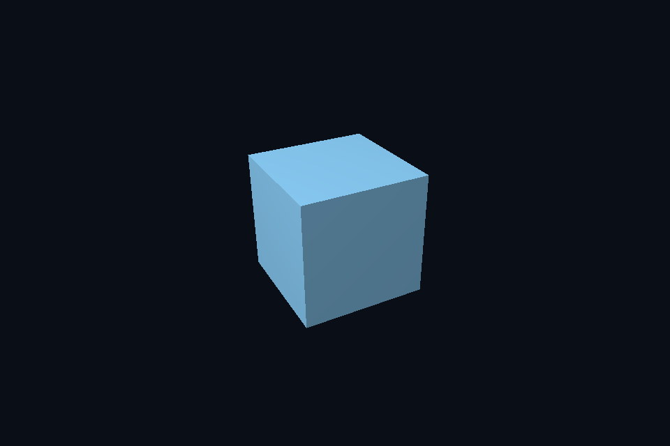

dx05_indexed_cbv · 索引、CBV 与 Root Constants
路线首页 · 上一课 · 下一课
构建和运行
从仓库根目录执行，完成配置后后续只需 build：
cmake --preset dx12
cmake --build --preset dx12-debug --target dx05_indexed_cbv --parallel 4
.\DirectX12\build\bin\Debug\dx05_indexed_cbv.exe
也可以通过根目录“开始学习.cmd”打开页面后点击“运行本课”。01/08 是控制台计算/设备检查示例，点击后可用“查看运行输出”阅读结果。其余示例 Esc 退出，拖动窗口可测试尺寸重建。
预期结果：旋转立方体，前后遮挡正确。
先读哪些代码
Index Buffer / CBV / Root Constants
本目录 main.cpp 选择本课的执行路径。完整 API 实现在 common/dx12_course.hpp（相对路线根目录），数学和网格在仓库 shared/scene.hpp。每课都是独立程序；共享代码避免把相同资源生命周期错误复制十遍，也会为后续课预先初始化部分公共状态。首次阅读只沿本课列出的调用路径展开。
原理和实现
Frame 的 CBV 地址按 256 字节对齐，实际矩阵仅 64 字节；Root Constants 20 个 DWORD 对应 80 字节 Draw。CPU 的 GLM 列主序与 HLSL column_major、mul(M,v) 保持一致。模型只有旋转/均匀缩放，因此 HLSL 中简化法线变换成立；非均匀缩放需显式逆转置。
本课使用与 Vulkan 相同的几何和验证目标，比较资源绑定与同步的不同表达。CPU 创建的数据、GPU 资源和用于访问它的 view/descriptor 是不同层次；用调试层与抓帧工具分别核对接口约定和实际内容。命令异步执行，示例显式等待 fence 后才重用单份上传资源与 command allocator。
HLSL 使用 column_major 与 mul(M,v)，保持与共享 GLM 数据相同的内存和乘法约定。调整窗口大小时必须更新尺寸相关的目标与投影；map、创建视图或改变 CPU 变量都不会替代已经提交给 GPU 的工作。
修改练习
加入第二个立方体并单独更新 root constants；核对 CBV 分配大小。
修改 shader 后重新构建，再运行。Vulkan GLSL 会被编译并复制到 exe 旁的 shaders；DX12 的 HLSL 副本也随构建更新，运行时再编译。应修改源目录而不是运行副本。
自测
为什么 64 字节的 Frame 仍分配 256 字节上传常量空间？
参考：常量缓冲视图/地址的对齐约束与数据本身大小不同，需满足 D3D12 对齐要求。
验证和调试
运行 dx05_indexed_cbv.exe --smoke 执行四帧（或设备/计算检查）并退出；颜色课会从 GPU 读回 PPM，计算课验证 256 个数。参见仓库 调试指南。这些基础例子按帧串行等待，重点是可追踪的生命周期；多帧重叠不能仅删除 wait，需要同时改成帧资源环。
实测画面
固定时间的 GPU 读回图像（nvpro 为 headless Viewport 输出）。

深入学习：数据、接口与执行
Frame 地址通过 root CBV 提供，Draw 是 20 DWORD root constants，SRV table 在另一 root parameter。parameter 下标、register 编号与 descriptor heap offset 各自独立。
配套精讲：三 API 对照 · 常量与资源绑定。先读概念与参数选择，再返回本课实现核对，不必一次展开所有公共类。
本课的真实源码切片
来自 DirectX12/common/dx12_course.hpp，第 328—357 行；这是现有实现的局部摘录，末尾可能处于函数中间，不是可单独编译的完整程序。
D3D12_ROOT_PARAMETER params[3]{};
params[0].ParameterType = D3D12_ROOT_PARAMETER_TYPE_CBV;
params[0].Descriptor.ShaderRegister = 0;
params[0].ShaderVisibility = D3D12_SHADER_VISIBILITY_VERTEX;
params[1].ParameterType = D3D12_ROOT_PARAMETER_TYPE_32BIT_CONSTANTS;
params[1].Constants = {1, 0, 20};
params[1].ShaderVisibility = D3D12_SHADER_VISIBILITY_ALL;
D3D12_DESCRIPTOR_RANGE range{};
range.RangeType = D3D12_DESCRIPTOR_RANGE_TYPE_SRV;
range.NumDescriptors = 1;
range.BaseShaderRegister = 0;
range.OffsetInDescriptorsFromTableStart = D3D12_DESCRIPTOR_RANGE_OFFSET_APPEND;
params[2].ParameterType = D3D12_ROOT_PARAMETER_TYPE_DESCRIPTOR_TABLE;
params[2].DescriptorTable = {1, &range};
params[2].ShaderVisibility = D3D12_SHADER_VISIBILITY_PIXEL;
D3D12_STATIC_SAMPLER_DESC sampler{};
sampler.Filter = D3D12_FILTER_MIN_MAG_MIP_LINEAR;
sampler.AddressU = sampler.AddressV = sampler.AddressW = D3D12_TEXTURE_ADDRESS_MODE_WRAP;
sampler.MaxLOD = D3D12_FLOAT32_MAX;
sampler.ComparisonFunc = D3D12_COMPARISON_FUNC_ALWAYS;
sampler.ShaderVisibility = D3D12_SHADER_VISIBILITY_PIXEL;
D3D12_ROOT_SIGNATURE_DESC root{};
root.NumParameters = 3;
root.pParameters = params;
root.NumStaticSamplers = 1;
root.pStaticSamplers = &sampler;
root.Flags = D3D12_ROOT_SIGNATURE_FLAG_ALLOW_INPUT_ASSEMBLER_INPUT_LAYOUT;
signature = rootSignature(c, root);
auto vs = compileHlsl(mode == 3 ? "TriangleMain" : "VertexMain", "vs_5_1"),
ps = compileHlsl("PixelMain", "ps_5_1");
同主题跨 API 导航
以下是同主题参考；场景、功能完成度和版本基线可能不同，具体边界见对照章节。
先预测，再验证
为什么 64 字节矩阵仍给 256 字节空间？
参考推导：需满足常量缓冲地址的 256 字节对齐要求；数据大小和接口对齐是两层约束。
在一次实验中只改一个因素，记录预测、实际画面/日志和原因。检查已有 smoke 是否仍通过；图形调试器里再核对本次 draw 的实际输入/输出，不能仅凭进程正常退出下结论。